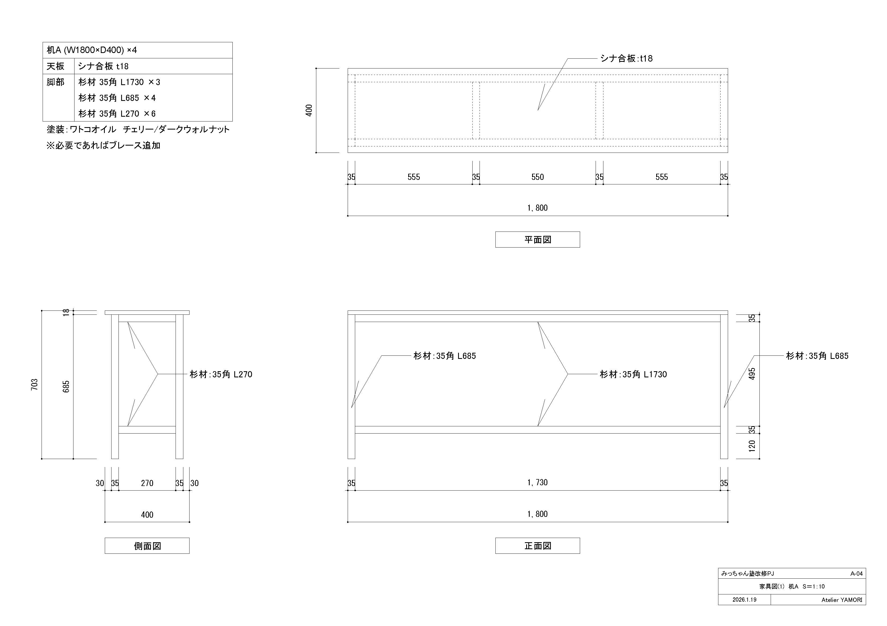
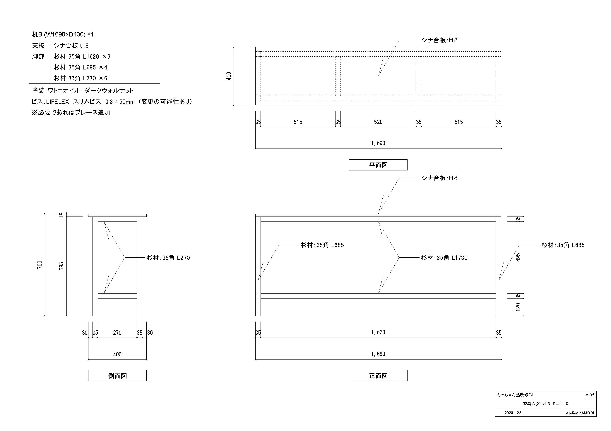
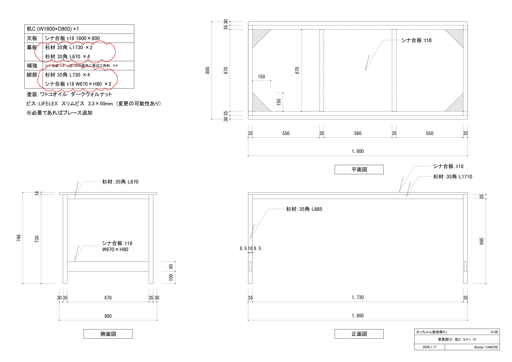
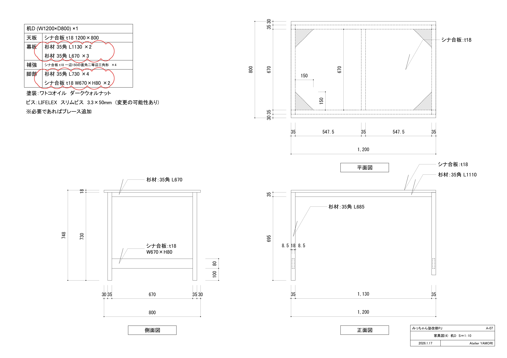
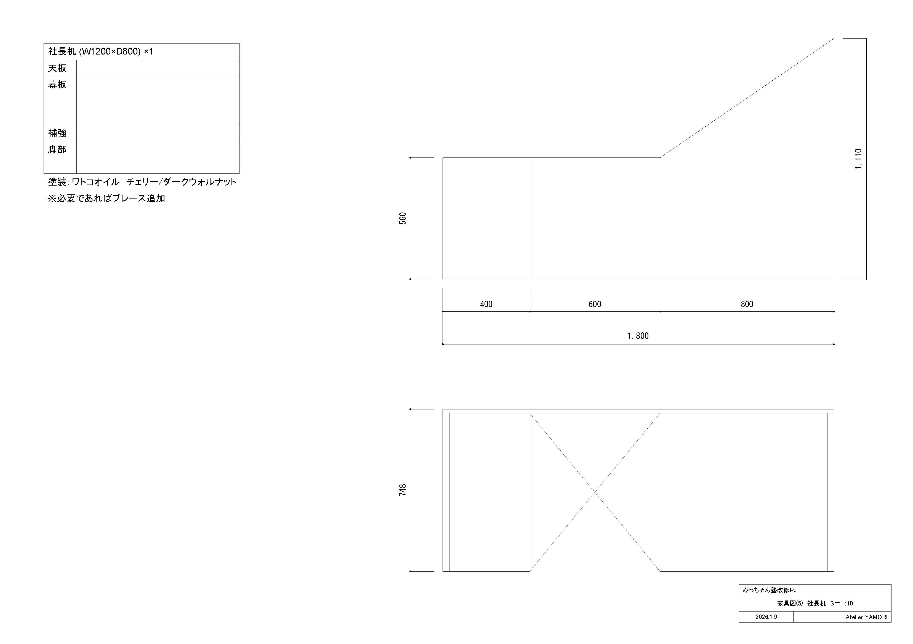
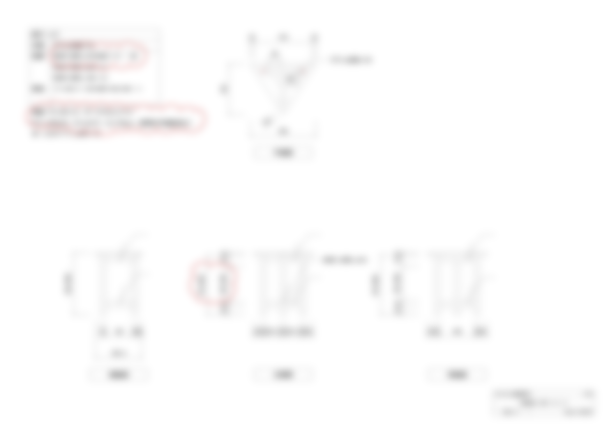

みっちゃん教室 椅子と机 2025-2026
椅子と机の設計と自主制作。
塾をなるべく広く見せること、露出している配線と机を上手く嵌めること、限りあるスペースになるべく多くの生徒が座れるようにすること、10万円ほどで全て制作すること。
これらを目標に設計を行う。‥‥以下削除要請。
大人たちのあいだで意匠権を獲るという話になったようである。
僕発案のアイデアではないので、たしかに僕は設計者ではなくて図面引きであった、とも言える。
一月の屋外制作作業の時間を思い出す。
刻一刻と暮れていく夕日に焦りながら、暮れてしまったあとは街灯の灯りの下で震えながらの作業。
みんなは大きい会社に入ってビルの建設現場で現場研修とかしている。
一方の僕は、道行く人に怪訝な顔をされながら、椅子一つすら満足に作れていなかった。
とにかく寒かった。防寒着を持っていなかった。木くずと塗料で服と靴は汚れていた。
途方に暮れながら、椅子と机をつくった。
そういう気持ちみたいのも、意匠権の中に入れておくことって、できたりしないだろうか。…？





